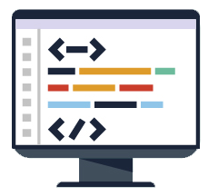
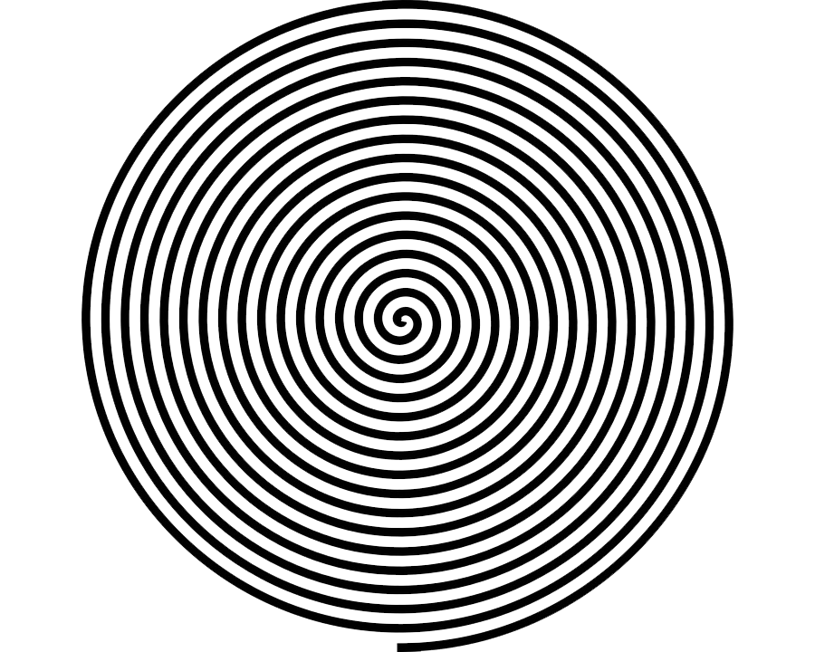
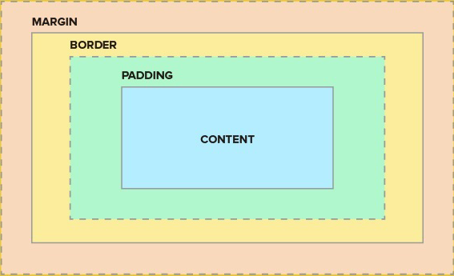

¿Que es HTML?
HTML, siglas en inglés de HyperText Markup Language (‘lenguaje de marcas de hipertexto’),
hace referencia al lenguaje de marcado para la elaboración de páginas web.
Es un estándar que sirve de referencia del software que conecta con la
elaboración de páginas web en sus diferentes versiones, define una estructura básica y
un código (denominado código HTML) para la definición de contenido de una página web, como texto,
imágenes, videos, juegos, entre otros

El HTML se escribe en forma de «etiquetas», rodeadas por corchetes angulares (<,>,/).
El HTML también puede describir, hasta un cierto punto, la apariencia de un documento,
y puede incluir o hacer referencia a un tipo de programa llamado script, el cual puede afectar
el comportamiento de navegadores web y otros procesadores de HTML.

¿Que es CSS?>
Info <---

CSS está diseñado principalmente para marcar la separación del contenido del documento y
la forma de presentación de este, características tales como las capas o layouts,
los colores y las fuentes. Esta separación busca mejorar la accesibilidad
del documento, proveer más flexibilidad y control en la especificación
de características
presentacionales, permitir que varios documentos HTML
compartan un mismo estilo usando una sola hoja de estilos separada
en un archivo .css, y reducir la complejidad y la repetición de código en la estructura del documento.
¿Qué es JavaScript?
Es un lenguaje de programación interpretado, dialecto del estándar ECMAScript.
Se define como orientado a objetos, basado en prototipos, imperativo, débilmente tipado y dinámico.
Se utiliza principalmente en su forma del lado del cliente (client-side),
implementado como parte de un navegador web permitiendo mejoras en la interfaz de usuario
y páginas web dinámicas4 y JavaScript del lado del servidor (Server-side JavaScript o SSJS).
Su uso en aplicaciones externas a la web, por ejemplo en documentos PDF, aplicaciones de escritorio
(mayoritariamente widgets) es también significativo.